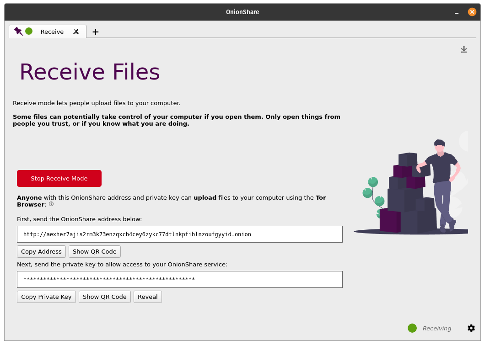
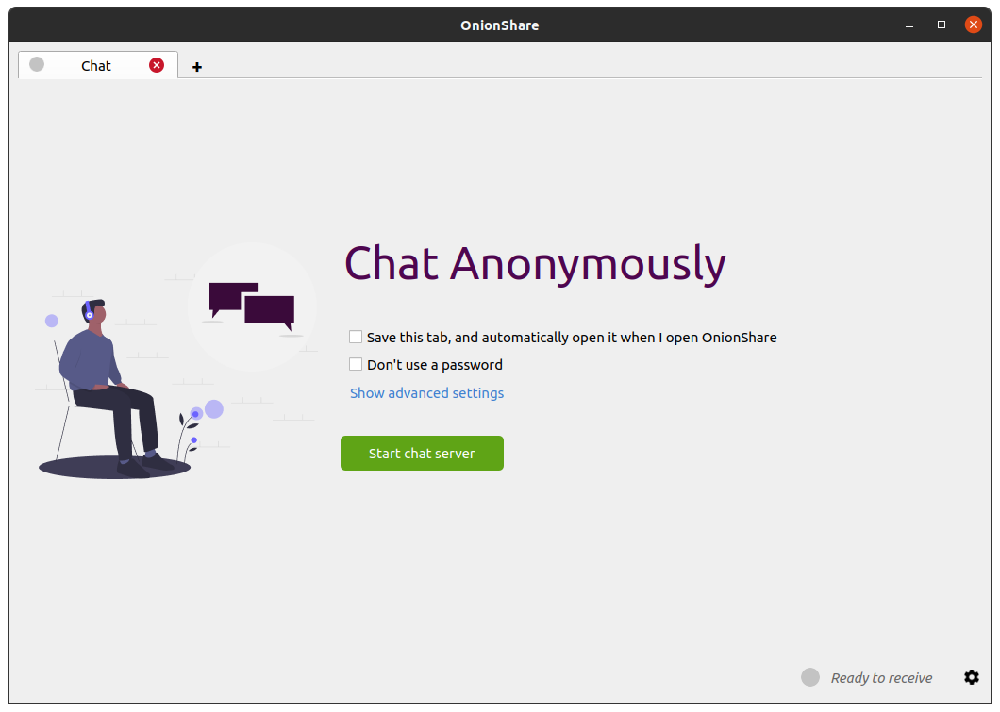

Stories about Peter Eckersley
My friend Peter Eckersley tragically and unexpectedly died on Friday. I hadn't spent much time with him in the last few years, but I wish that I had because he had such a big impact on my life. Wikipedians have created an article about Peter, and Seth Schoen, who worked closely with me and Peter at EFF on the tech team, wrote a memorial for him on the Let's Encrypt forum. I thought I would share a few stories about Peter here.
OnionShare 2.5 fixes security issues and adds censorship circumvention features
The OnionShare team has just released OnionShare 2.5! This version fixes security vulnerabilities uncovered in our first comprehensive security audit, and also includes improved censorship circumvention features. Download it from onionshare.org.

Qube Apps: a Flatpak-based app store for each qube
I really like Qubes but I haven't been using it a lot lately. I have a Qubes laptop that I use for specific high security tasks, but my daily driver the last few months has been Ubuntu or Pop!_OS (I really like the tiling windows and the design), and sometimes macOS. Qubes is great, but it can be cumbersome to use.

Goodbye, passwords in OnionShare
I'm excited to announce that OnionShare 2.4 is now out and the major change in this version is that we've completely gotten rid of passwords! Private OnionShare services are now protected using private keys (aka client authentication) on the Tor layer instead of instead of basic authentication on the HTTP layer. Check out the new version at onionshare.org!

Running an OnionShare anonymous dropbox on a Raspberry Pi
Now that the command line version of OnionShare has better support for running on headless Linux servers, I figured I should set up a dedicated Raspberry Pi anonymous dropbox server, and while I'm at it document how I'm doing it in a blog post.

OnionShare 2.3 adds tabs, anonymous chat, better command line support, and quite a bit more
After a ridiculously long sixteen months (or roughly ten years in pandemic time) I'm excited to announce that OnionShare 2.3 is out! Download it from onionshare.org.
This version includes loads of new and exciting features which you can read about in much more detail on the brand new OnionShare documentation website, docs.onionshare.org. For now though I'm just going to go over the major ones: tabs, anonymous chat, and better command line support.

Easily automate deleting your old tweets, likes, and DMs with Semiphemeral
Roughly one hundred years ago, in June of 2019, I released an open source Twitter privacy tool called Semiphemeral that makes it simple-ish to delete years of old tweets. The great thing about Semiphemeral is, unlike similar tools, it's flexible: you don't have to delete all of your old tweets if you don't want to. You can, say, choose to keep tweets that have at least 20 likes, flag specific tweets you want to never delete, or delete all your retweets and likes that are older than a week.
But at the time, Semiphemeral was only usable by the nerdiest among us. It required running commands in a terminal window, creating your own Twitter API key, and, if you want to automate it, setting up a cron job on a server. But this is no longer the case!
For the last several months I've been running an easy-to-use hosted version at Semiphemeral.com. Now anyone* can easily delete their old tweets, likes, and now even direct messages (more on this below).

Problematic behavior from the Whonix project
The first sign that something weird was going on with the Whonix project -- software, which is integrated into the Qubes operating system, that allows you to run anonymous VMs that force all your internet traffic through the Tor network, run primarily by Patrick Schleizer -- was in September 2018 when the project's official Twitter account tweeted, "We miss Jacob Appelbaum."
Using Mullvad VPN in Qubes
A friend wanted my help configuring Mullvad VPN on their Qubes computer. Instead of just helping them, I decided to write a quick blog post explaining how I normally set up VPNs in Qubes. There are many different ways -- Mullvad even has its own Qubes guide -- but I prefer using NetworkManager system tray applets, so I can always see if my VPN is connected or not. I also use a simple script that I set to run when my AppVM boots to automatically connect to the VPN, and reconnect if it disconnects, and Qubes firewall rules to prevent non-VPN internet traffic from sneaking by.

New version of OnionShare makes it easy for anyone to publish anonymous, uncensorable websites
I’m excited to announce that OnionShare 2.2 is released! You can download it from onionshare.org.
When I first wrote OnionShare in 2014, it let you anonymously and securely send files to people. It worked like this: OnionShare zips up the files, starts a local web server on your computer with a link to this zip file, makes this website accessible as a Tor onion service, and shows you the URL of the web server. You send someone this .onion URL, they load it in Tor Browser (loading the website hosted directly on your computer), and then they can download the zip file. As soon as the download is complete, OnionShare shuts down the web service.
In the years since then it has gotten a whole lot better (largely thanks to a growing community of volunteer contributors). Instead of just sending files, you can use it to receive files now, allowing you to turn your computer into an anonymous dropbox. But it has always worked the same way: hosting an anonymous website locally on your computer. But since OnionShare hosts a website on your computer anyway, why not use it to host actual websites?